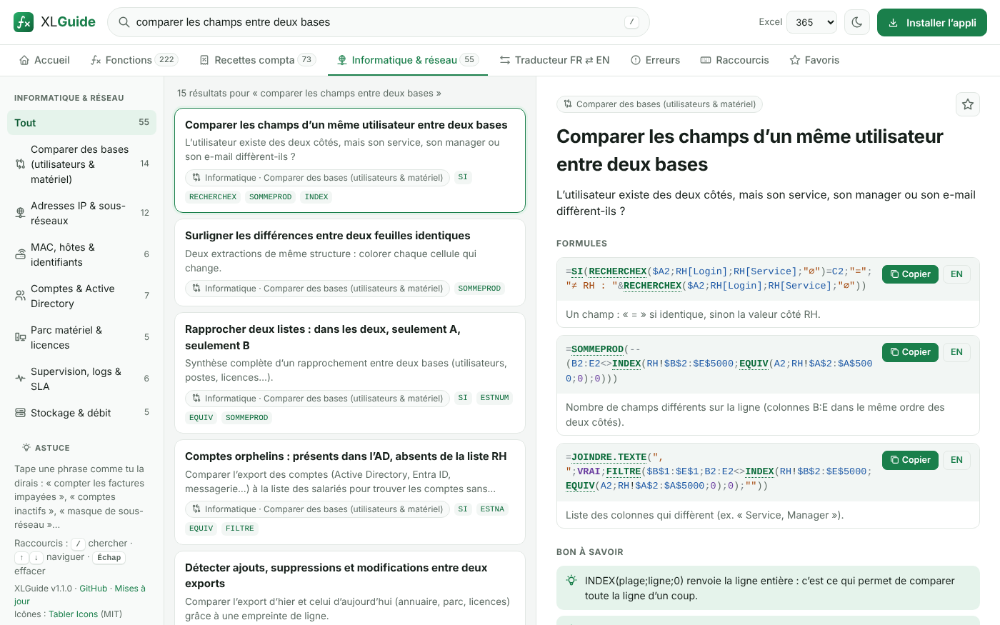

Recherche en langage naturel
« compter les factures impayées », « comptes inactifs », « enlever les espaces » : pas besoin de connaître le nom de la fonction. Tolère les accents oubliés et les fautes de frappe.
Tape ce que tu veux faire : « additionner si », « échéance 30 jours fin de mois », « comparer deux listes », « masque de sous-réseau »… XLGuide trouve la bonne fonction, explique chaque argument et te donne la formule prête à coller. Pensé pour la comptabilité et l’administration système et réseau.

« compter les factures impayées », « comptes inactifs », « enlever les espaces » : pas besoin de connaître le nom de la fonction. Tolère les accents oubliés et les fautes de frappe.
TVA, emprunts, amortissements (linéaire, prorata, dégressif fiscal), balance âgée, rapprochement bancaire, FEC, lettrage, charges constatées d’avance…
Calculs IPv4 (masque, CIDR, réseau, broadcast, appartenance à un sous-réseau), adresses MAC, FQDN, dates Active Directory et Unix, userAccountControl, logs, SLA, RAID, débits.
Annuaire ↔ RH, CMDB ↔ inventaire physique, export de la veille ↔ du jour : comptes orphelins, comptes à désactiver, matériel à récupérer, différences champ par champ.
Noms de fonctions français, séparateur « ; », virgule décimale. Chaque fiche donne aussi le nom anglais et la formule convertie en un clic.
Colle une formule d’un tuto anglais (=SUMIFS(…, …)) et récupère sa version française (=SOMME.SI.ENS(…; …)), et inversement.
Indique ta version d’Excel (2010 à 365) : les fonctions que tu n’as pas sont signalées, avec une alternative compatible dans les recettes.
Aucune connexion, aucun compte, aucune donnée envoyée. Favoris, mode sombre, navigation au clavier (/, ↑↓, Entrée).
Choisis ton système. Les fichiers viennent directement des releases GitHub, compilés automatiquement à partir du code source.
XLGuide-Setup.exe et suis l’assistant (installation sans droits administrateur).irm https://joss943.github.io/xlguide/install.ps1 | iexLe plus simple : une commande qui détecte ta distribution et installe le bon paquet.
curl -fsSL https://joss943.github.io/xlguide/install.sh | bashwget -qO /tmp/xlguide.deb https://github.com/Joss943/xlguide/releases/latest/download/xlguide-amd64.deb && sudo apt install -y /tmp/xlguide.debDésinstaller : sudo apt remove xlguide
sudo dnf install -y https://github.com/Joss943/xlguide/releases/latest/download/xlguide-x86_64.rpmopenSUSE : sudo zypper install --allow-unsigned-rpm ./xlguide-x86_64.rpm · Désinstaller : sudo dnf remove xlguide
curl -fLo /tmp/xlguide.pacman https://github.com/Joss943/xlguide/releases/latest/download/xlguide-x86_64.pacman && sudo pacman -U --noconfirm /tmp/xlguide.pacmanDésinstaller : sudo pacman -R xlguide
chmod +x XLGuide-x86_64.AppImage && ./XLGuide-x86_64.AppImageNécessite FUSE 2 (libfuse2 sur Ubuntu). Le script d’installation crée aussi le raccourci dans le menu des applications.
Oui, et open source (licence MIT). Le code est sur GitHub.
XLGuide sert à trouver et comprendre les formules : tu les utilises ensuite dans Excel (Windows, Mac ou Excel sur le web, qui fonctionne très bien depuis Linux). La grande majorité des formules marchent aussi dans LibreOffice Calc en français.
Non. L’application fonctionne entièrement en local, sans compte ni connexion. Les favoris sont stockés sur ton ordinateur.
Télécharge simplement la nouvelle version et installe-la par-dessus l’ancienne (ou relance la commande d’installation Linux). Le menu Aide → Vérifier les mises à jour de l’application ouvre la page des versions.
Chaque exemple chiffré est recalculé automatiquement par un tableur indépendant (LibreOffice Calc) à chaque modification du code : 219 résultats sont ainsi contrôlés, y compris les calculs d’adresses IP et de dates Active Directory.
Un onglet complet « Informatique & réseau » : calculateur de sous-réseau en formules, conversions IP ⇄ nombre, fonctions personnalisées IPNUM / IPDANSRESEAU, adresses MAC, comptes AD (dates, userAccountControl, DN), inventaire et licences, logs et syslog, SLA, stockage, et surtout la comparaison de bases utilisateurs et matériel.
Ouvre une issue sur GitHub : la base est un simple fichier facile à enrichir.